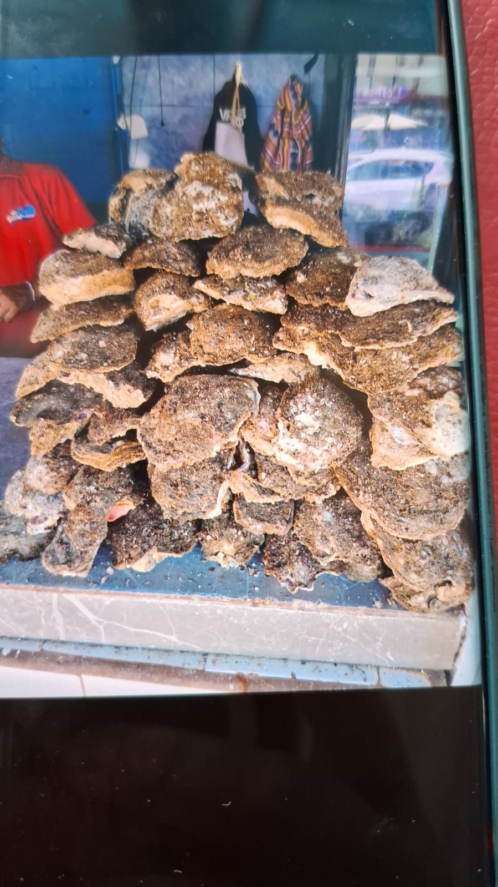
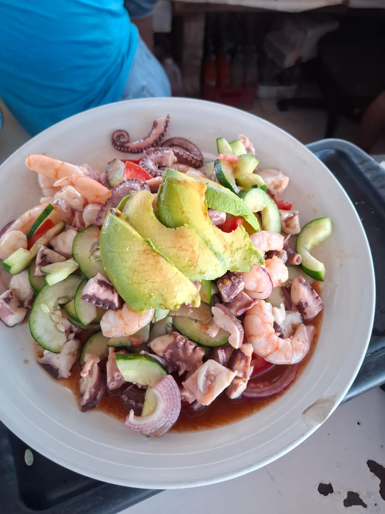
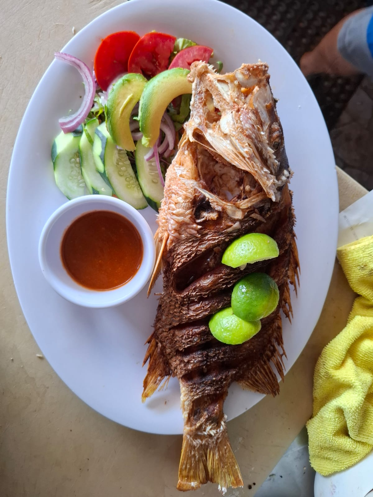
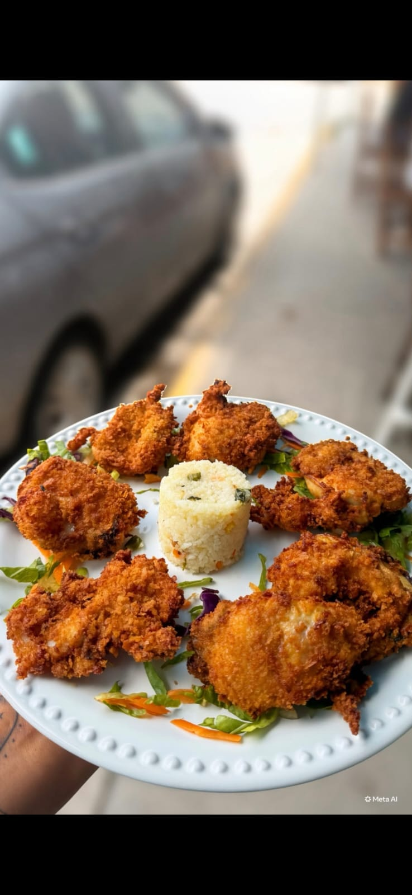
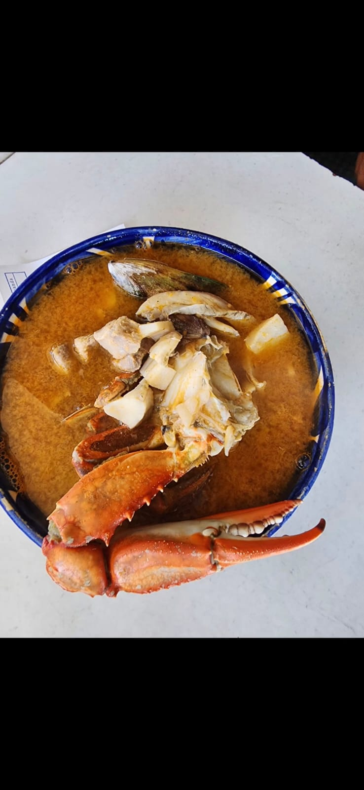
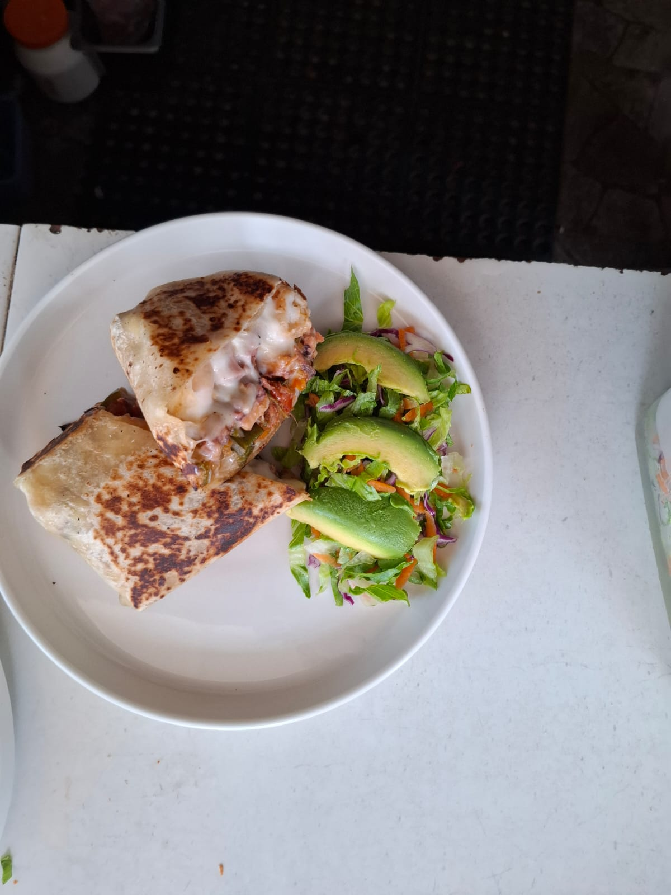
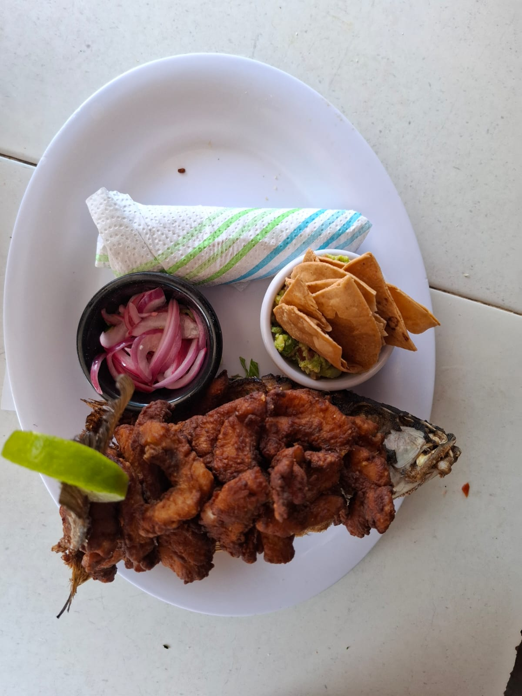
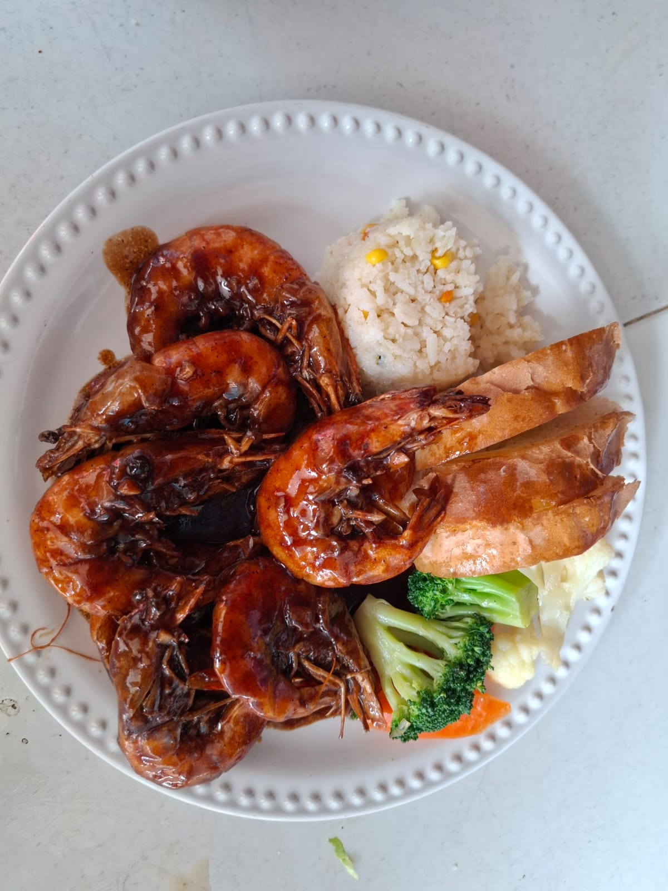
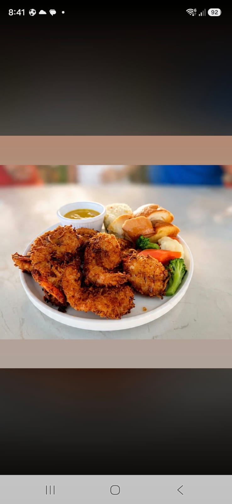

Oyster Mariscos - Col. del Toro
Frescos.
Deliciosos.
Especialistas en |
Mariscos preparados al momento con producto fresco, sabores auténticos y el ambiente familiar que convierte cada visita en una antojada vuelta al mar.

todos los días
Sobre Oyster Mariscos
Producto fresco, sabor directo del mar y trato familiar.
Oyster Mariscos es un establecimiento gastronómico dedicado a servir productos del mar frescos y de alta calidad. En Col. del Toro, la cocina se enfoca en preparaciones auténticas, bien presentadas y hechas para disfrutarse sin prisa.
Frescura cuidada
Ingredientes seleccionados para que cada plato conserve textura, color y sabor limpio.
Sabor auténtico
Sashimi, aguachile y órdenes de camarón con sazón de mariscos de barrio, directo y generoso.
Ambiente familiar
Un lugar cercano para comer bien, compartir y volver cuando se antoja algo fresco.
Especialidades
Mariscos con frescura visible, sazón memorable.
La carta gira alrededor de productos del mar frescos, preparaciones crudas, opciones calientes y bebidas bien frías.

Aguachile, sashimi y camarón crudo
Preparaciones frescas, ácidas y bien balanceadas para quienes buscan el golpe limpio del mar.
- Aguachile preparado con producto fresco y vegetales crujientes
- Sashimi con presentación generosa y sabor intenso
- Orden de camarón crudo para compartir al centro
- Toques de limón, chile, pepino, cebolla y aguacate según la preparación

Mariscos dorados, fritos y servidos al momento
Texturas crujientes, porciones cumplidoras y el punto justo para comer recién salido de cocina.
- Camarones empanizados con guarnición
- Pescado frito con vegetales, limón y salsa
- Filete servido con acompañamientos frescos
- Caldo de mariscos para quienes buscan sabor profundo y reconfortante
Amplio menú
Opciones pensadas para abrir el apetito, acompañar la charla y pedir una cerveza bien fría.
- Torre de mariscos con presentación abundante
- Órdenes para compartir entre familia o amigos
- Ostiones y producto de temporada sujeto a disponibilidad
- Cerveza bien fría para acompañar el antojo
¿Quieres saber qué hay fresco hoy? Escríbenos y te confirmamos disponibilidad antes de tu visita.
Preguntar por WhatsApp¿Por qué Oyster?
Una parada local para comer fresco, rico y sin complicarse.
Ingredientes frescos
La frescura es el punto de partida para cada aguachile, sashimi y preparación de mariscos.
Preparación al momento
Platillos servidos con buena presentación, equilibrio de salsas y cuidado en cada montaje.
Ambiente familiar
Un lugar cómodo para llegar con antojo, pedir al centro y disfrutar mariscos con gente cercana.
Cerveza bien fría
El complemento directo para los sabores cítricos, picantes y frescos de la cocina del mar.
Galería
Antojos Oyster
Una muestra de platillos reales, producto fresco y preparaciones servidas en Oyster Mariscos.






Visítanos
Ven por tu antojo de mariscos frescos
Estamos en 5 de Mayo #162, Col. del Toro. Abrimos de 12:00 PM a 7:00 PM para que llegues por sashimi, aguachile o la preparación que se te antoje.
-
5 de Mayo #162, Col. del Toro, Puerto Vallarta, Jalisco
Cómo llegar (Google Maps) - 322 305 90 98 (WhatsApp)
- Horario: 12:00 PM a 7:00 PM